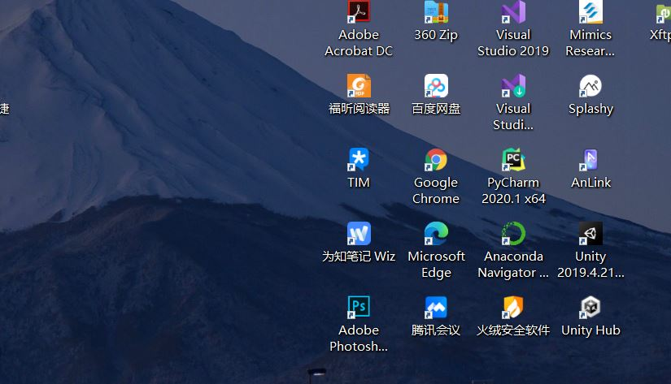

Markdown 段落没有特殊的格式，直接编写文字就好，
段落的换行是使用两个以上空格加上回车。
当然也可以在段落后面使用一个空行来表示重新开始一个段落。
斜体文本 _ 斜体文本 _ 粗体文本 粗体文本 粗斜体文本 粗斜体文本
带下划线文本
创建脚注格式类似这样 [^RUNOOB]。或者[^R]
[^RUNOOB]: 脚注：菜鸟教程 -- 学的不仅是技术，更是梦想！！！
[^R]: 脚注2：菜鸟教程 ！！！
如果是段落上的一个函数或片段的代码可以用反引号把它包起来（`） ' size()函数'
代码块
for(auto c:product){
v.push_back(c);
}
链接名称或者<链接地址> 高级链接 这个链接用 1 作为网址变量 Google
这个链接用 runoob 作为网址变量 Runoob
然后在文档的结尾为变量赋值（网址）


Markdown 制作表格使用 | 来分隔不同的单元格，使用 - 来分隔表头和其他行。
| 表头 | 表头 |
|---|---|
| 单元格 | 单元格 |
| 单元格 | 单元格 |
-: 设置内容和标题栏居右对齐。 :- 设置内容和标题栏居左对齐。 :-: 设置内容和标题栏居中对齐。
| 左对齐ahshasdad | 右对齐 | 居中对齐 |
|---|---|---|
| 单元格 | 单元格wwwww | 单元格wwwwwww |
| 单元格 | 单元格 | 单元格 |
Markdown 使用反斜杠转义特殊字符 文本加粗 ** 正常显示星号 **